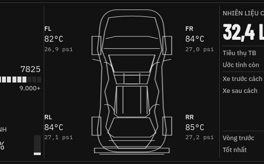
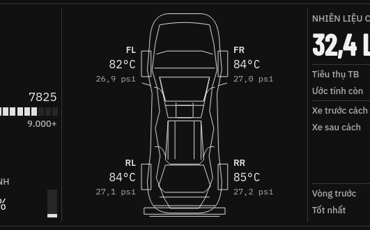
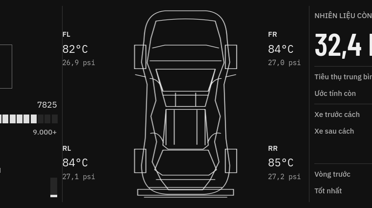
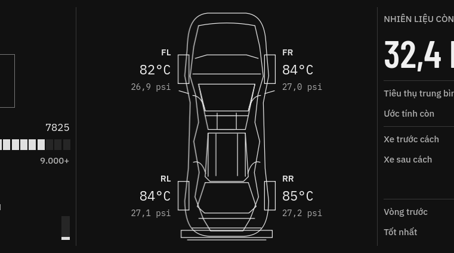
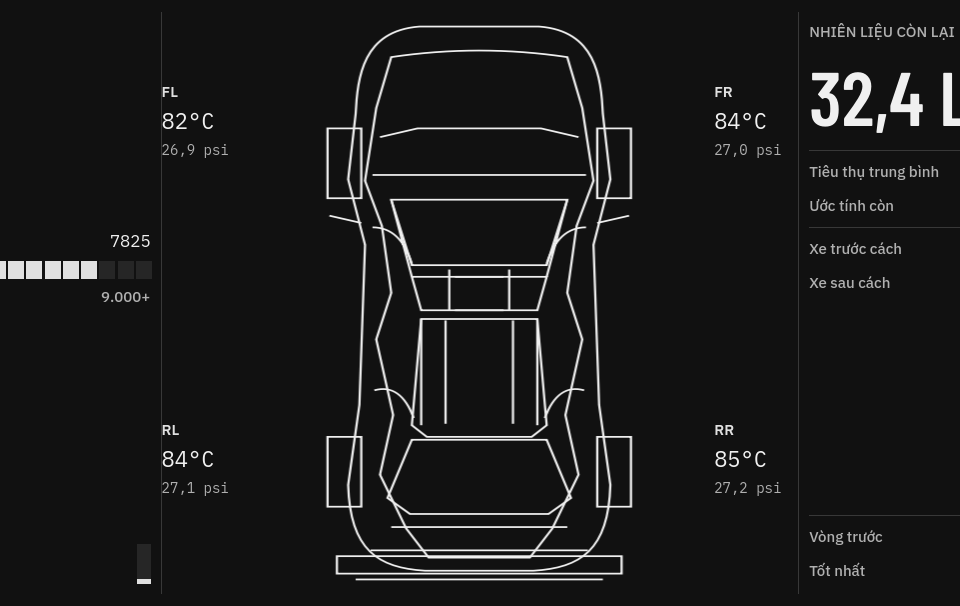
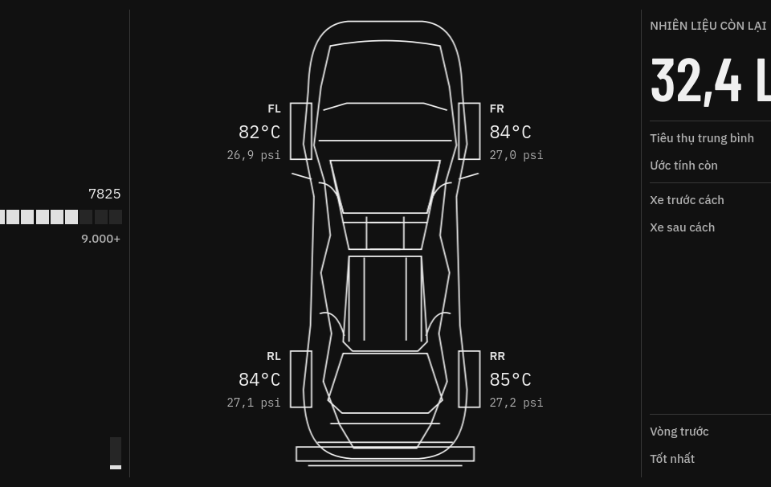

Exact same crop box applied to the preserved pre-fix crop and current post-fix Qt screenshot. This is a visual comparison, with geometry numbers and source hashes in comparison-report.json.





